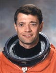

Lyndon B. Johnson Space Center
Houston, Texas 77058
|
National Aeronautics and Space Administration Lyndon B. Johnson Space Center Houston, Texas 77058 |
 |
Biographical Data |
||
Jeffrey S. Ashby (Captain, USN, Ret.)
NASA Astronaut (Former)
PERSONAL DATA: Raised in the Rocky Mountains where he developed a love for skiing, soaring, backpacking and fly-fishing. Jeff and his wife, Paige, share their home with two spoiled dogs.
EDUCATION: Graduated from Evergreen High School, Evergreen, Colorado in 1972; received a Bachelor of Science degree in Mechanical Engineering from the University of Idaho in 1976, and a Master of Science degree in Aviation Systems from the University of Tennessee in 1993. Ashby is a graduate of the Naval Test Pilot School and the Naval Fighter Weapons School (Top Gun).
SPECIAL HONORS: Recipient of the Defense Superior Service Medal; Legion of Merit; Distinguished Flying Cross; Defense Meritorious Service Medal; Meritorious Service Medal; four Navy Air Medals; two Navy Commendation Medals; Navy Achievement Medal; Navy Attack Aviator of the Year 1991; NASA Outstanding Leadership Medal; NASA Exceptional Service Medal; and three NASA Space Flight Medals.
EXPERIENCE: In his 25-year Navy career, Ashby accumulated over 7000 flight hours and 1000 aircraft carrier landings during 6 aircraft carrier deployments. As a test pilot, he directed testing of the FA-18 Hornet’s smart weapons, night vision, and electronic warfare systems. Ashby logged 65 combat missions in the FA-18 during Operations Desert Storm and Southern Watch in Iraq, and Operation Continue Hope in Somalia before serving as the Commanding Officer of Strike Fighter Squadron 94 aboard the USS Abraham Lincoln - under his leadership, VFA-94 earned the coveted Battle "E" Award designating it as the Navy's top FA-18 squadron in 1994. He reported to the Johnson Space Center for astronaut duties in 1995, completing three space missions, with 436 orbits around the Earth and over 660 hours in zero G. After a 4-year special assignment to the Headquarters, Air Force Space Command in Colorado Springs, Colorado, Ashby joined Alliant Tech Systems (ATK) Space Systems Group in 2008 as the Vice President of Business Development.
SPACE FLIGHTS: STS-93 In 1999, Ashby was the pilot on Space Shuttle Columbia. The primary objective of this mission was to deploy the Chandra X-ray Observatory. Measuring 45 feet long, Chandra is the largest satellite the shuttle has ever launched. It is the most sophisticated x-ray observatory to date allowing scientists to study exotic phenomena such as exploding stars, quasars, and black holes.
STS-100 In 2001, he served as pilot aboard Space Shuttle Endeavour on the 6th assembly flight of the International Space Station. During this complex mission, Ashby operated the shuttle’s robotic arm to transfer Canadarm2 from the shuttle payload bay to the space station. Two space walks were performed to activate the station’s robotic arm enabling it to be used for future assembly tasks. After undocking Endeavour, he flew a unique profile around the station to capture some of the images seen in the IMAX-3D film "The International Space Station."
STS-112 In 2002, Ashby was the mission commander of Space Shuttle Atlantis on the 9th assembly flight of the International Space Station. The crew installed the 15-ton Integrated Truss Segment S1 to the starboard side of the space station. Three space walks were performed to activate the truss, and prepare for solar arrays which will power future science modules. STS-112 was the first mission to fly the “shuttlecam” which captured dramatic views from Atlantis as the shuttle left the planet.
AUGUST 2009